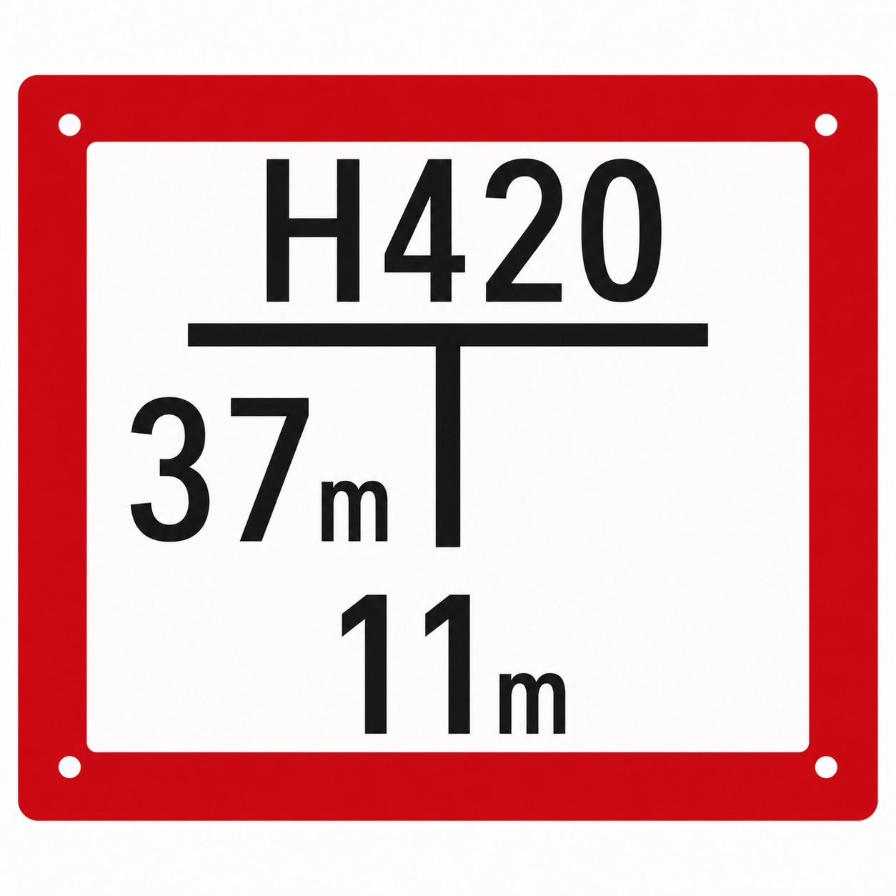

☩ Das Wasser-Orakel ☩
Höret, Wandersmann, höret fein,
wo rotes Zeichen trägt den Schein.
Dort, wo das Wasser heimlich wacht,
und tief im Grund die Quelle lacht,
wo stumm das Nass zur Rettung speiht,
liegt Euch das nächste Rätsel bereit.

Suchet dort, wo das Wasser speiht.